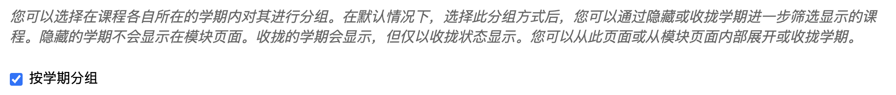
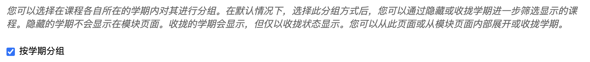

svsmate - v0.0.1
SVSmate
The Ultimate VS Code Extension for SUSTechers


🚀 About the Project
This project originated as the final assignment for the Spring 2025 CS304 - Software Engineering.
Our goal is to develop a powerful and user-friendly VS Code extension tailored for SUSTechers, aiming to simplify their academic workflows — particularly operations related to Blackboard.
✨ Key Features
- 🔗 Seamlessly connect VS Code with your personal Blackboard data
- 📅 Automatically sync your schedule and assignments, and manage them with ease
- 📄 Extract code snippets from PDF course materials
- 🤠Collaborate on files with teammates in real time
- 🤖 Handle tasks more efficiently with AI-powered assistance
💾 Installation
SVSmate can be installed via the VS Code Marketplace.
Usage
Blackboard Crawler
Please follow the following setting in your personal Blackboard to make sure this function work.
 

Documentation
Click here to view our Develop Document »
Community & Support
👥 Contribute
Any contributions you make are greatly appreciated.
If you have a suggestion that would make this better, please fork the repo and create a pull request. You can also simply open an issue with the tag "enhancement". Don't forget to give the project a star! Thanks again!
- Fork the Project
- Create your Feature Branch
git checkout -b feature/AmazingFeature - Commit your Changes
git commit -m 'feat: AmazingFeature' - Push to the Branch
git push origin feature/AmazingFeature - Open a Pull Request
Contributors:
License
Distributed under the MIT License. See LICENSE.txt for more information.